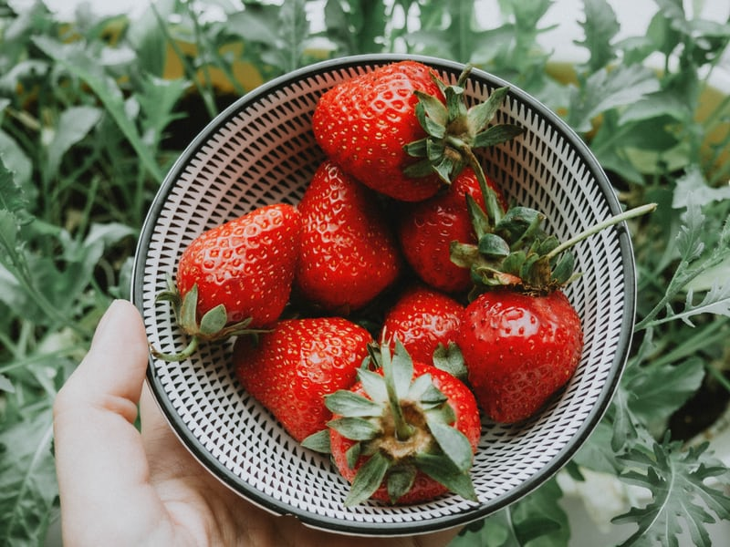
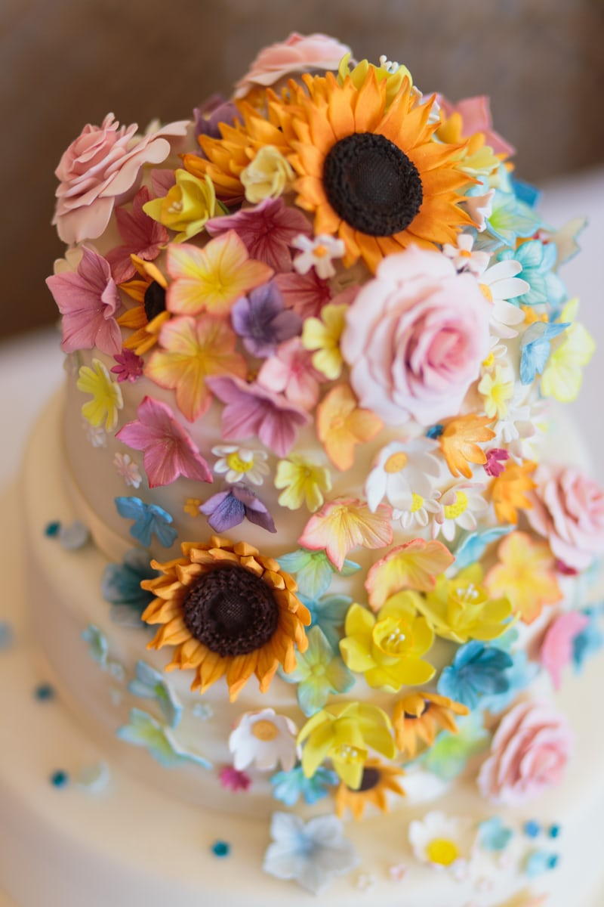
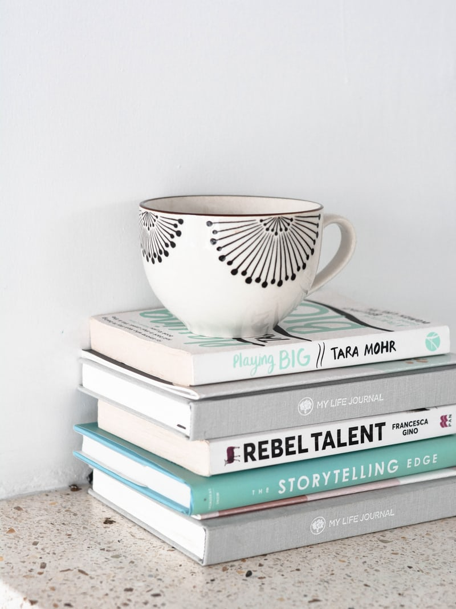

Organic Gardening

Organic gardening for me, means more than freedom from chemicals. I will have fresh-picked herbs just steps from my door. It is one of the great ways to get closer to nature.
If you want to get started with Organic Gardening you can refer to some of the grest websites click here
Baking

I've always loved baking cookies, brownies and such for fun. When i had my first daughter i started baking cakes for birthdays and my interests took me to next level. I then took baking lessons and started small home business for birthday party theme cakes and cookies! So much fun :). And of course every year I make my own birthday cake.
Interested in baking here are some exciting websites to get started. click here
Online Book Club

I've always had hard time maintaining focus in reading books. When my friend started a book club i joined and slowly reading half a book per month. And now after a year i am surprised that i actually like and can finish reading book
Interested in getting started with book reading? check out following websites. click here